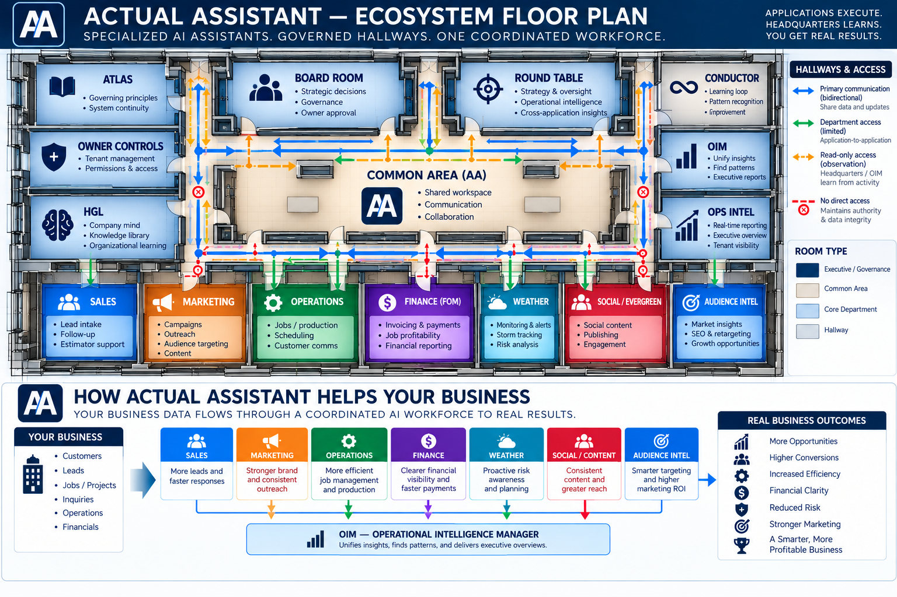

Build the Team You Could Never Afford to Hire.
Need an assistant? Or six? Actual Assistant gives you and your business an AI Workforce that works together behind the scenes—answering customers, managing administrative work, preparing estimates, finding new prospects, following up with opportunities, posting to social media, monitoring weather, and keeping you informed with daily business intelligence.
Meet Your AI Workforce Schedule a Live DemoSee for yourself. Call (727) 496-4442 or text Actual Assistant.
Every business owner knows this feeling.
How am I going to return these calls? Where did I put that note? Did I follow up with that prospect? I should be working on SEO. I need to post to socials more often. I wish it was easy to give a preliminary estimate. Driving around for “free estimates” is not free — not for me.
I need to contact adjusters, realtors, GCs, property managers, and past customers. I need referrals. I need to know when storms hit, market those areas, and prove the storm happened. I need estimates followed up, contracts followed up, signatures saved, and every opportunity documented.
Outsourcing is expensive. Tools do not talk to each other. Hiring a full staff costs a fortune. And even if you hire people, will they do it consistently?
It is not like having a team of actual assistants.
It is a team of Actual Assistants.
Meet Your AI Workforce
Hire one assistant or assemble an entire coordinated workforce over time.
Administrative Assistant
Never miss another customer inquiry. Your Administrative Assistant acknowledges new customers, keeps conversations moving, documents activity, and lets you focus on running the business.
Meet This AssistantSales Assistant
Turn more estimates into signed contracts. Your Sales Assistant keeps opportunities moving until customers make a decision.
Meet This AssistantMarketing Assistant
Keep your company visible while you're working. Your Marketing Assistant continuously builds your online presence.
Meet This AssistantOperations Manager
Keep every customer, estimate, contract, document, and follow-up organized from beginning to end.
Meet This AssistantBusiness Development Assistant
Find the right prospects, build qualified audiences, execute professional outreach, and develop relationships that create tomorrow's work.
Meet This AssistantWeather Analyst
Monitor developing weather, identify affected areas, verify historical events, and prepare professional weather documentation.
Meet This ProfessionalBusiness Intelligence Manager
Know what deserves your attention today instead of searching for answers.
Meet This AssistantSee Your AI Workforce Working Together
Watch your Actual Assistants work independently, hand work across departments, document every meaningful event, notify the right people, and learn together.
 See How It Works →
See How It Works →
Meet ECO
Every successful company needs someone keeping the business organized. That's ECO.
While each Actual Assistant performs a specialized responsibility, ECO quietly coordinates the workforce behind the scenes by organizing customer records, communications, estimates, contracts, documents, follow-up, e-signatures, and operational activity.
You remain the owner. ECO simply helps your AI Workforce operate as one coordinated team instead of a collection of disconnected tools.
How Your AI Workforce Works Together
Actual Assistant brings specialized AI assistants together across your business. They can answer phone calls, take messages, respond by SMS with AI-assisted conversations, acknowledge new inquiries, prepare estimates, follow up with opportunities, support marketing and outreach, monitor weather, organize operations and financial activity, and keep you informed about what is happening across the business.
Each assistant has a specialized responsibility while the right information moves behind the scenes, allowing the workforce to support your business as one coordinated team.

Production proven.
Actual Assistant is operating in a real contractor business today. Here is a recent 30-day production snapshot from Contractor Navigator.
13
Reportable Opportunities
100% of reportable opportunities · 13 qualified business opportunities during the reporting period.
9
AA Engaged
69.2% of reportable opportunities had documented customer-facing Actual Assistant participation.
3
Work / Scheduled
33.3% of AA Engaged · Three AA-engaged opportunities later reached Work / Scheduled.
1
Buying Signal After AA
11.1% of AA Engaged · A documented buying signal followed earlier AA participation.
2
Contracts After AA
22.2% of AA Engaged · Two contracts followed documented customer-facing AA participation.
1
Signed After AA
11.1% of AA Engaged · One signed agreement followed documented AA participation.
Where the opportunities came from
5 (38.5%)
AA SourcesActual Assistant-generated or attributable opportunity sources.
7 (53.8%)
Insurance / Carrier / TPAOpportunities originating through insurance and assignment relationships.
1 (7.7%)
Unknown / OtherOpportunity without a qualifying identified source.
Voice / Intake Population: 54 customer records were handled during the period. Only 13 (24.1%) became reportable business opportunities; 41 (75.9%) were kept out of opportunity reporting because they contained intake activity without qualifying business evidence. That separation prevents routine calls, robodialers, messages, and other non-opportunity activity from consuming the owner's attention or artificially inflating business-performance reporting.
Documented customer-facing Actual Assistant participation followed by later business events. This is chronology, not a claim of causation.
One proven end-to-end example: Actual Assistant has already completed a real production workflow—from generating the opportunity through customer acknowledgement, estimate preparation, automated follow-up, buying signal detection, contract delivery, electronic signature, and completed sale—resulting in an $8,500 roof replacement agreement with minimal owner involvement.
What that means in the real business
Actual Assistant has eliminated approximately 75% of the busy work previously handled by the owner, while no credible prospect has been lost and every credible prospect has received follow-up. The exact efficiency gain is difficult to quantify, but the reduction in manual workload is substantial—and the work continues whether the owner is available to handle it or not.
Prefer to purchase through AWS?
Actual Assistant is also available through AWS Marketplace for businesses that prefer AWS procurement.
View Actual Assistant on AWS Marketplace →For the first time, feel like you can breathe again.
Every inquiry acknowledged. Every opportunity moving. Every note documented. Every customer interaction easier to find. Every assistant working together.
Schedule a Live Demo